|
4-2-3-1
|
Switzerland | 2 | - | 0 | Algeria |
4-3-3
|
| HT 1-0 | ||||||
|
FIFA World CupFriday 3 July 2026
|
||||||
- Venue
- BC Place Vancouver
- Attendance
- 52,497
- Referee
- Yael Falcón Pérez
Goal10'
B. Embolo
Assist: J. Manzambi
Goal46'
D. Ndoye
- 2
Substitution71'
R. Vargas
F. Rieder
J. Manzambi
N. Okafor
Substitution83'
B. Embolo
Z. Amdouni
- 2
Substitution87'
D. Zakaria
S. Widmer
D. Ndoye
M. Aebischer
Whistle45+4'
45+4'
Yellow card36'
F. Chaïbi
- 2
Substitution58'
H. Aouar
J. Hadjam
R. Zerrouki
A. Gouiri
- 2
Substitution71'
N. Bentaleb
H. Boudaoui
R. Mahrez
A. Hadj Moussa
Yellow card72'
H. Boudaoui
Substitution82'
R. Belghali
A. Boulbina
Switzerland | |
|---|---|
Goalkeeper | |
| 1 | G. Kobel |
Defender | |
| 4 | N. Elvedi |
| 5 | M. Akanji |
| 6 | D. Zakaria 87' |
| 13 | R. Rodríguez |
Midfielder | |
| 8 | R. Freuler |
| 9 | J. Manzambi 71' |
| 10 | G. Xhaka |
| 11 | D. Ndoye 46'87' |
| 17 | R. Vargas 71' |
Forward | |
| 7 | B. Embolo 10'83' |
Substitutes | |
| 3 | S. Widmer 87' |
| 19 | N. Okafor 71' |
| 20 | M. Aebischer 87' |
| 22 | F. Rieder 71' |
| 23 | Z. Amdouni 83' |
Algeria | |
Goalkeeper | |
| 23 | L. Zidane |
Defender | |
| 2 | A. Mandi |
| 15 | R. Aït-Nouri |
| 17 | R. Belghali 82' |
| 21 | R. Bensebaini |
Midfielder | |
| 6 | R. Zerrouki 58' |
| 10 | F. Chaïbi 36' |
| 19 | N. Bentaleb 71' |
Forward | |
| 7 | R. Mahrez 71' |
| 8 | H. Aouar 58' |
| 22 | I. Maza |
Substitutes | |
| 9 | A. Gouiri 58' |
| 11 | A. Hadj Moussa 71' |
| 13 | J. Hadjam 58' |
| 14 | H. Boudaoui 71'72' |
| 20 | A. Boulbina 82' |


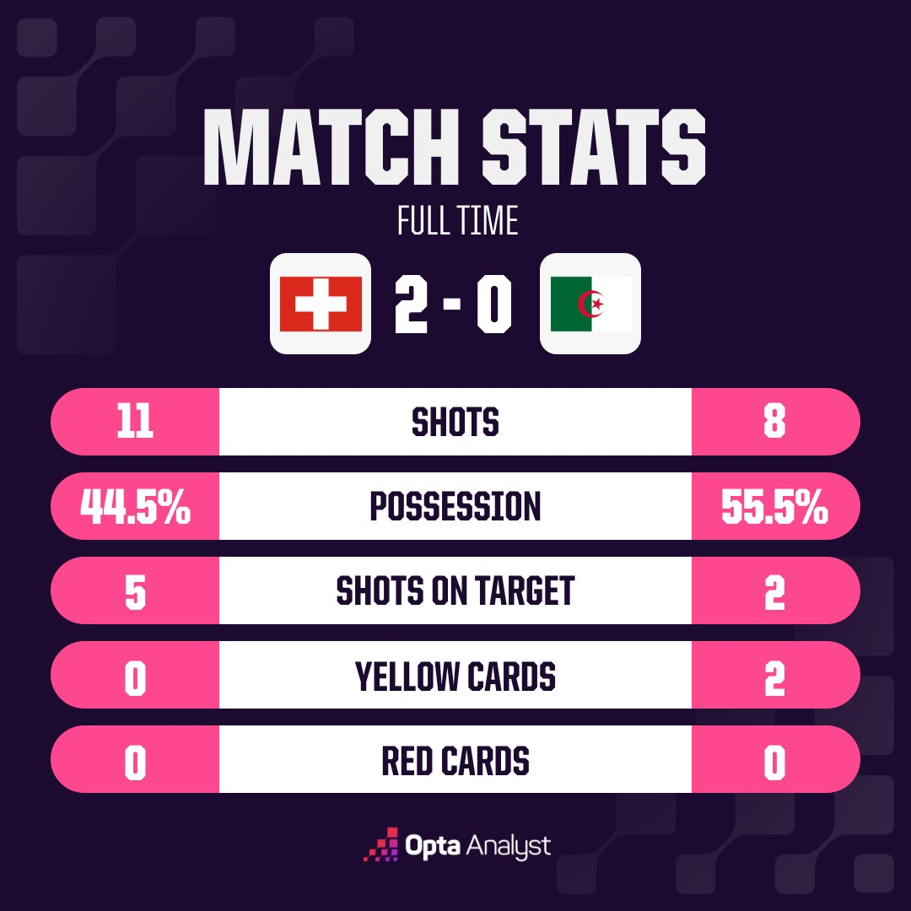
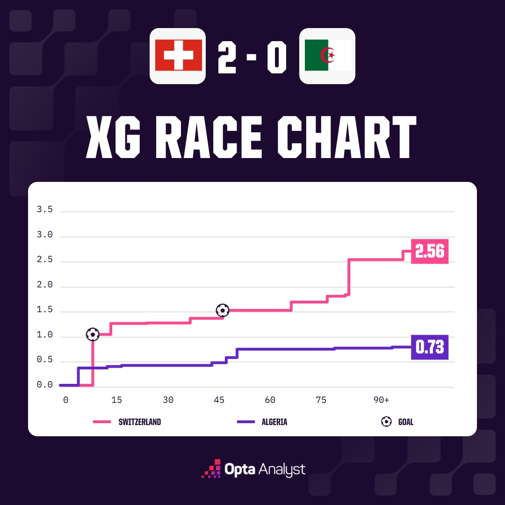
98'
Switzerland have won their last 3 games in the FIFA World Cup, their longest winning streak in the competition (since at least 1965/1966).
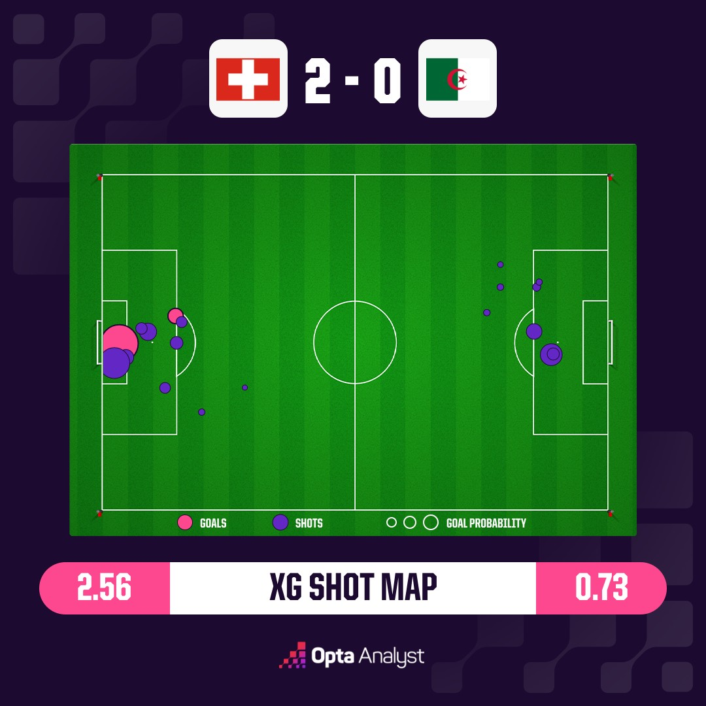
90+7'
IT’S ALL OVER! Switzerland have taken the victory, winning 2-0 thanks to goals from Breel Embolo and Dan Ndoye. Switzerland can celebrate, but Algeria will have to lick their wounds.
90+6'
SAVED! Good work from Luca Zidane, who stands firm to deny Remo Freuler, who managed to get a shot away from inside the Algeria area.
90+6'
BLOCKED! That was close. Noah Okafor got off a shot, which was heading in, but Aïssa Mandi was on hand to make a vital intervention. Great block!
90+6'
Plenty of the ball in the last quarter-of-an-hour of this match for Algeria, but still Switzerland stand firm, despite having had only 34.35% of the ball in that period. Can Algeria make their possessional dominance count?
90+3'
Free-kick! A foul from Hicham Boudaoui on Zeki Amdouni. It is well away from Algeria’s goal, so it is unlikely to result in a chance for Switzerland.
90+3'
Great block from Nico Elvedi, as they get in the way of an attempt from Ibrahim Maza that might have been set to cause the goalkeeper some problems. Solid defending from the Switzerland player.
90+2'
A free-kick to Algeria, as Fabian Rieder goes in and fouls Ramy Bensebaini. However, Switzerland will not mind giving one away in this area too much, with plenty of distance to their goal.
90+1'
Not much goalmouth action to speak of in this period of the game, with no attempts made from either side. This game could spark at any moment, however. It is Algeria who have had more of the ball, controlling 71 per cent possession in the last 10 minutes.
90+1'
A free-kick to Switzerland, as Farès Chaïbi goes in and fouls Zeki Amdouni. However, Algeria will not mind giving one away in this area too much, with plenty of distance to their goal.
88'
Adil Boulbina makes a run in behind but the Switzerland defensive line were alert, and stepped up in time to catch them offside. That run just needed to be timed better.
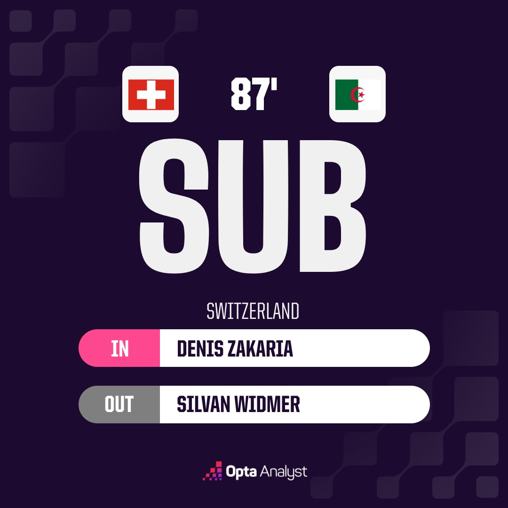
87'
A substitution for Switzerland sees Dan Ndoye replaced by Michel Aebischer. There does not appear to be any obvious sign of an injury, so that is a tactical switch.
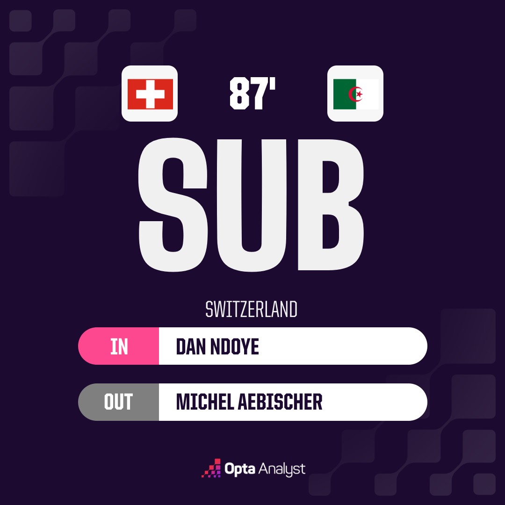
87'
An enforced substitution for Switzerland, as Denis Zakaria cannot carry on after sustaining an injury. Silvan Widmer has hastily warmed up and now made their way onto the pitch in Denis Zakaria's place.
86'
A foul from Zeki Amdouni on Hicham Boudaoui sees Algeria win a free-kick, but it is not in a dangerous position, so Switzerland should be confident they can defend it easily enough.
83'
Ricardo Rodríguez goes in on Anis Hadj Moussa and concedes a foul. The free-kick is not in a particularly dangerous area from Switzerland’s viewpoint, though.
83'
The Switzerland manager is looking to the substitutes’ bench, bringing on Zeki Amdouni in place of Breel Embolo. Will the change make a difference? Let’s find out!
82'
It's all hands on deck for Switzerland as they defend their lead, making a wave of critical blocks and clearances
82'
Substitution. Rafik Belghali has to make way, with Adil Boulbina coming on in their place following an injury. That is going to come as a blow for Algeria. Can they overcome it?
81'
Remo Freuler goes in on Ibrahim Maza and concedes a foul. The free-kick is not in a particularly dangerous area from Switzerland’s viewpoint, though.
81'
What a miss! That is a bad finish from Fabian Rieder, who has been unable to convert from a good opportunity, seeing a big chance for Switzerland to extend their lead go begging. Will Algeria make them pay for that profligacy?
80'
MISS! A shot from Breel Embolo ends up being off target. They might have done a bit better with that one, but it remains Switzerland 2-0 Algeria.
78'
Rafik Belghali goes in on Granit Xhaka and concedes a foul. The free-kick is not in a particularly dangerous area from Algeria’s viewpoint, though.
77'
That is a disappointing effort from Jaouen Hadjam, who went for glory but got their attempt wrong, and the shot sailed off target. A frustrating moment for Algeria.
76'
It's all hands on deck for Switzerland as they defend their lead, making a wave of critical blocks and clearances
76'
There are 15 minutes plus added time to go in this match. Algeria have had more of the ball so far with a possession figure of 55.85%, while Switzerland have had 44.15%.
75'
BLOCKED, AND A CERTAIN GOAL SAVED! Fabian Rieder's effort was heading in, but on the line, a player is perfectly placed to make a vital clearance. Fantastic defending from the Algeria player.
72'
Yellow card! Hicham Boudaoui will have to be careful from now on after they are cautioned.
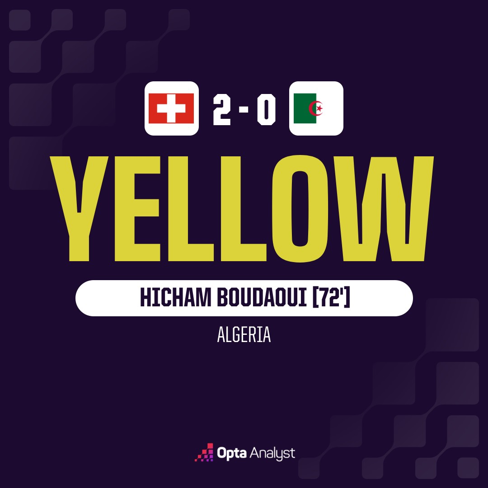
72'
Free-kick! A foul from Hicham Boudaoui on Granit Xhaka. It is well away from Algeria’s goal, so it is unlikely to result in a chance for Switzerland.
71'
Algeria are making a tactical change. Riyad Mahrez is leaving the field and in their place comes Anis Hadj Moussa – we will soon see if this switch has the desired impact.
71'
Substitution! Hicham Boudaoui replaces Nabil Bentaleb for Algeria as the manager shuffles the pack. Can Hicham Boudaoui make an impression as this match continues?
71'
Substitution! Noah Okafor replaces Johan Manzambi for Switzerland as the manager shuffles the pack. Can Noah Okafor make an impression as this match continues?
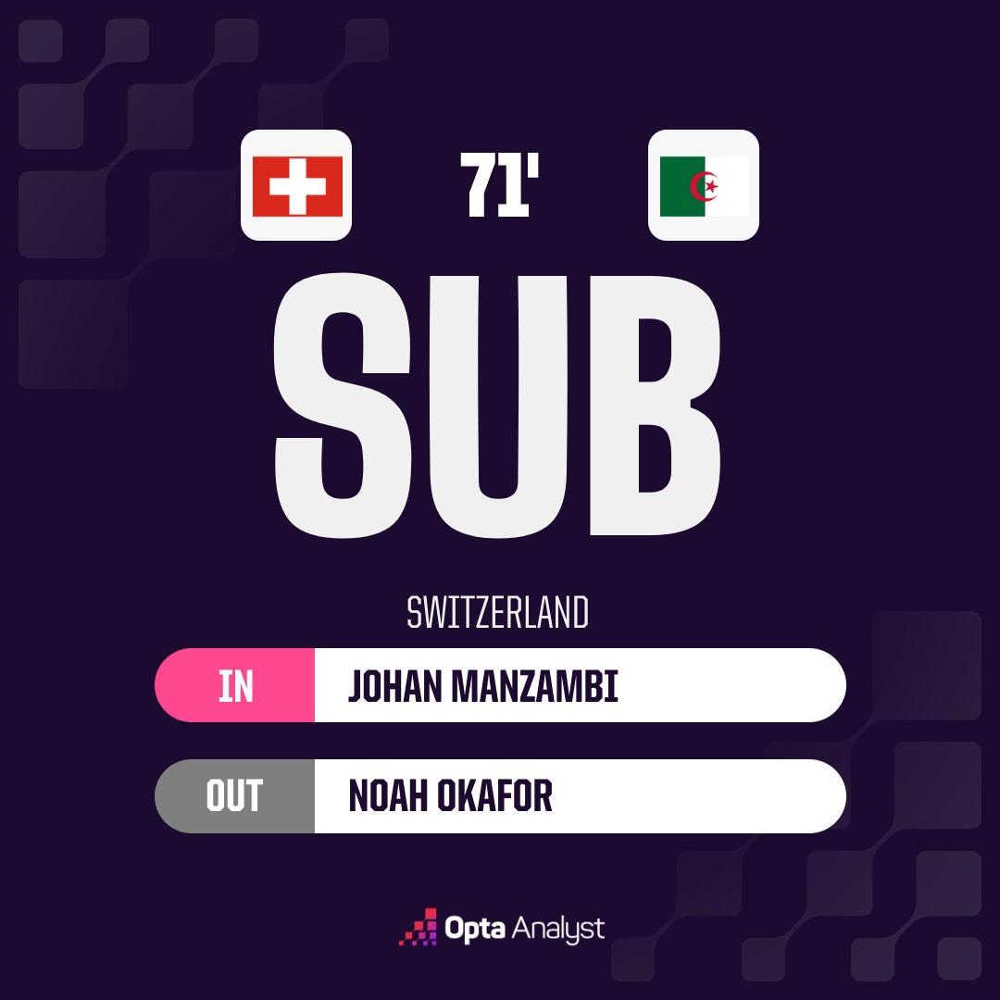
71'
Substitution! Fabian Rieder replaces Rubén Vargas for Switzerland as the manager shuffles the pack. Can Fabian Rieder make an impression as this match continues?
66'
This match is into the last 25 minutes now, and before it goes into the final stages, let’s check on the shots. There have been 12 in total – 6 from Algeria, and 6 from Switzerland. Of those attempts, 5 have hit the target – 2 from Algeria and 3 from Switzerland.
65'
Free-kick! A foul from Ricardo Rodríguez on Rafik Belghali. It is well away from Switzerland’s goal, so it is unlikely to result in a chance for Algeria.
65'
Shot blocked! Nico Elvedi unleashes an attempt at goal, but the ball does not reach its target thanks to Jaouen Hadjam, who makes a solid block to stem the danger – for now.
63'
It’s backs to the wall now — Switzerland throwing everything into defending their advantage, with a flurry of crucial interventions.
60'
Neither team has had a shot in the past 10 minutes, as this match just enters something of a down period. Switzerland have seen more of the ball, with 57 per cent possession, but Algeria are keeping them away from goal. There is still a chance the match will spark into life, though.
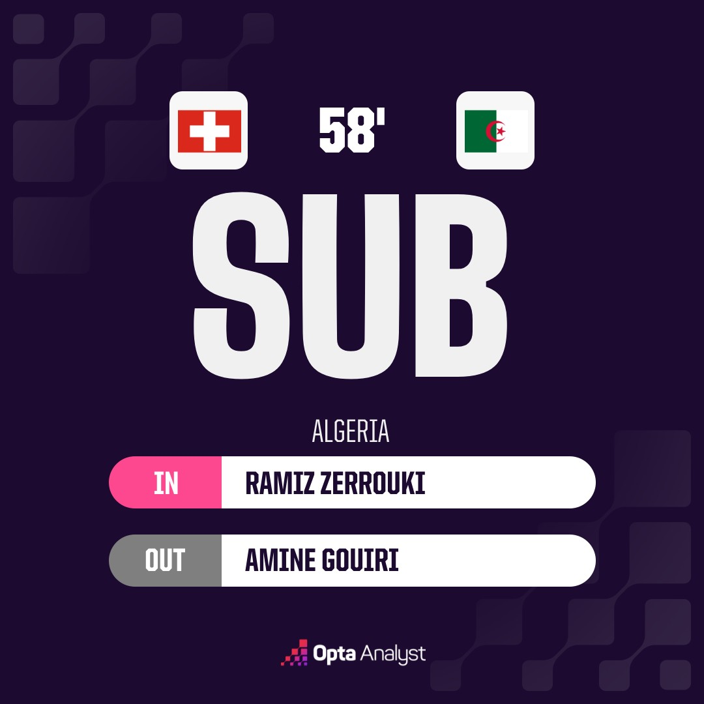
58'
Substitution! Amine Gouiri replaces Ramiz Zerrouki for Algeria as the manager shuffles the pack. Can Amine Gouiri make an impression as this match continues?
58'
The Algeria manager is looking to the substitutes’ bench, bringing on Jaouen Hadjam in place of Houssem Aouar. Will the change make a difference? Let’s find out!
57'
A free-kick to Switzerland, as Ibrahim Maza goes in and fouls Granit Xhaka. However, Algeria will not mind giving one away in this area too much, with plenty of distance to their goal.
55'
Free-kick! A foul from Nabil Bentaleb on Dan Ndoye. It is well away from Algeria’s goal, so it is unlikely to result in a chance for Switzerland.
54'
Great defending from Switzerland, who are staying organised and winning key battles to preserve their lead.
52'
Despite trailing, Algeria are showing real defensive grit, digging in and stopping further damage as they try to build a platform.
52'
A rash challenge from Ramiz Zerrouki, who sends Granit Xhaka tumbling, giving Switzerland a free-kick. It is not in a threatening position, but it gives them a chance to get back on the ball.
50'
That might have been going in! A fantastic block from Denis Zakaria, who gets in the way of a goal-bound effort from Riyad Mahrez. Would the goalkeeper have been beaten? We will never know.
49'
Great defending from Switzerland, who are staying organised and winning key battles to preserve their lead.
46'
GOAL! Dan Ndoye scores, and Switzerland are now well in front – surely they will go on and see this one out now? It seems a long way back for Algeria, with Switzerland well in control of this match.
46'
Dan Ndoye has scored his first goal in the 2026 FIFA World Cup.
50'
Switzerland are unbeaten in their last 5 FIFA World Cup matches when leading at half-time (W3, D2) dating back to 15th July 1966 against Spain (L1-2).
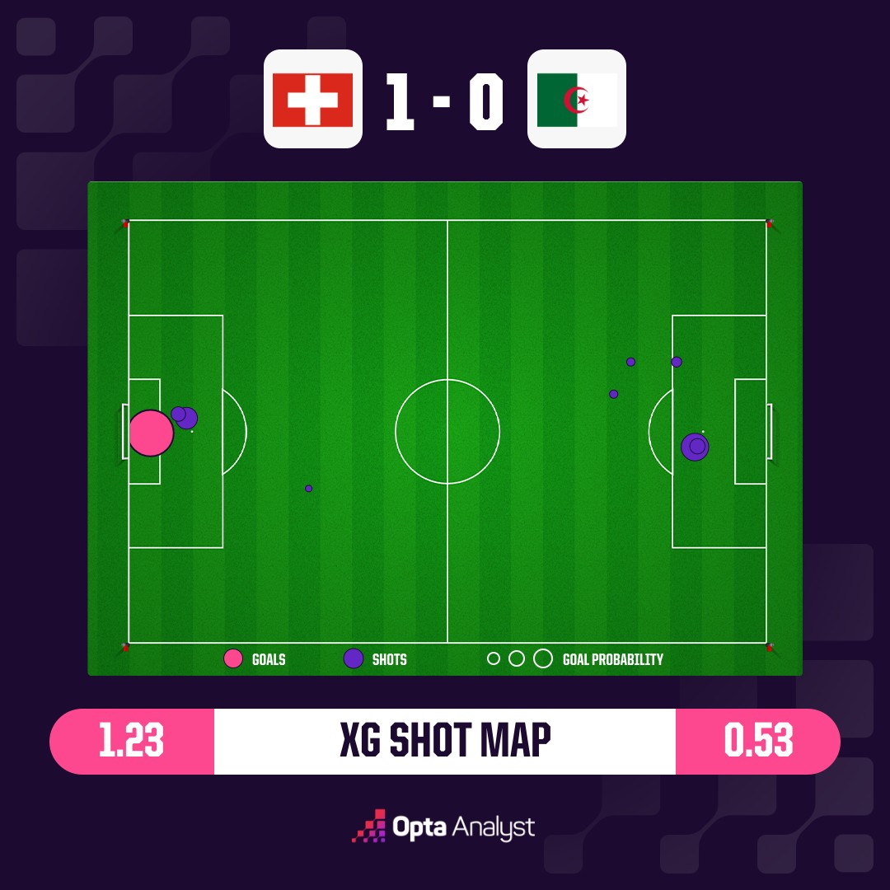
45+5'
Half-time! We reach the interval at BC Place Vancouver and it is Switzerland who have a 1-0 lead over Algeria. Can they hold on and see this out in the second half?
45+3'
Riyad Mahrez makes a run in behind but the Switzerland defensive line were alert, and stepped up in time to catch them offside. That run just needed to be timed better.
45+2'
What a miss! That was a huge chance for Ibrahim Maza, but they have failed to convert. What an opportunity that was for Algeria.
43'
Save! A big stop from Gregor Kobel, who reacts to keep out Farès Chaïbi's attempt from inside the area.
43'
A free-kick to Algeria, as Johan Manzambi goes in and fouls Riyad Mahrez. However, Switzerland will not mind giving one away in this area too much, with plenty of distance to their goal.
42'
Despite trailing, Algeria are showing real defensive grit, digging in and stopping further damage as they try to build a platform.
38'
Free-kick! A foul from Dan Ndoye on Houssem Aouar. It is well away from Switzerland’s goal, so it is unlikely to result in a chance for Algeria.
38'
A rash challenge from Nabil Bentaleb, who sends Granit Xhaka tumbling, giving Switzerland a free-kick. It is not in a threatening position, but it gives them a chance to get back on the ball.
37'
MISS! A shot from Denis Zakaria ends up being off target. They might have done a bit better with that one, but it remains Switzerland 1-0 Algeria.
36'
A yellow card for Algeria's Farès Chaïbi. They will have to walk a tightrope for the rest of this match, and Switzerland will likely look to target them and draw a second bookable offence.
36'
Good play from Johan Manzambi, who draws a foul from Farès Chaïbi to hand Switzerland a free-kick in a dangerous position. Will they create something from this set-piece?
35'
Switzerland are having plenty of the ball, with 65.35% possession in the last 15 minutes. However, they have been unable to transfer that possessional dominance into a goal during that period.
35'
A foul from Remo Freuler on Rayan Aït-Nouri sees Algeria win a free-kick, but it is not in a dangerous position, so Switzerland should be confident they can defend it easily enough.
33'
A rash challenge from Rayan Aït-Nouri, who sends Dan Ndoye tumbling, giving Switzerland a free-kick. It is not in a threatening position, but it gives them a chance to get back on the ball.
33'
A foul from Rubén Vargas on Rafik Belghali sees Algeria win a free-kick, but it is not in a dangerous position, so Switzerland should be confident they can defend it easily enough.
31'
Rayan Aït-Nouri goes in on Dan Ndoye and concedes a foul. The free-kick is not in a particularly dangerous area from Algeria’s viewpoint, though.
25'
MISS! The score remains 1-0, with Algeria relieved after Switzerland’s Ricardo Rodríguez goes for goal but sends their attempt off target. Not one to write home about, that one.
21'
Ramiz Zerrouki goes in on Johan Manzambi and concedes a foul. The free-kick is not in a particularly dangerous area from Algeria’s viewpoint, though.
18'
Shot blocked! Ibrahim Maza unleashes an attempt at goal, but the ball does not reach its target thanks to Denis Zakaria, who makes a solid block to stem the danger – for now.
15'
SHOT! Denis Zakaria manages to get a shot off from inside the area, but although it was heading in, they cannot get enough on it to beat Luca Zidane, who makes the save.
14'
Gregor Kobel is called into action to keep out a shot from outside the box by Houssem Aouar. The effort from the Algeria player was on target, but Switzerland shot-stopper got to it.
12'
This could be a chance for Algeria, after Ricardo Rodríguez fouls Riyad Mahrez, handing them a free-kick in a threatening area. A good set-piece from here could really test the Switzerland defense!
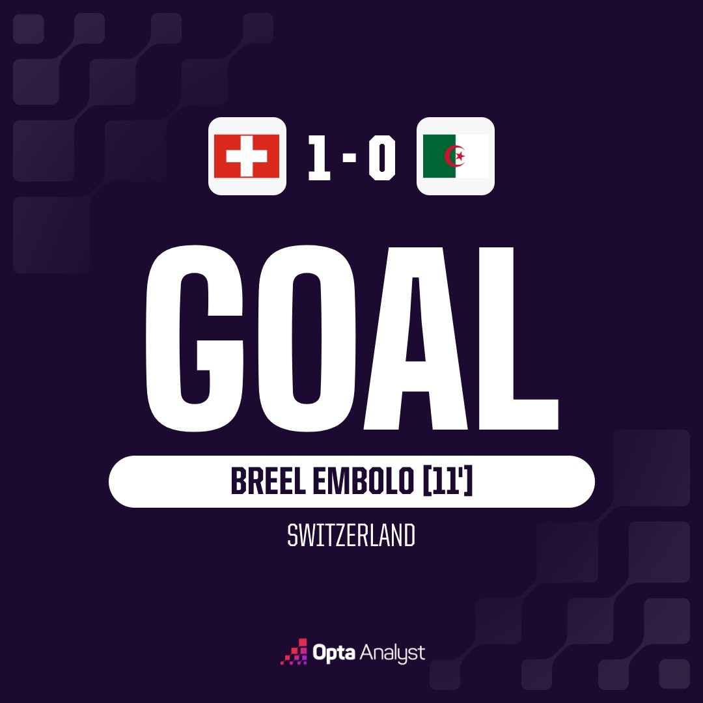
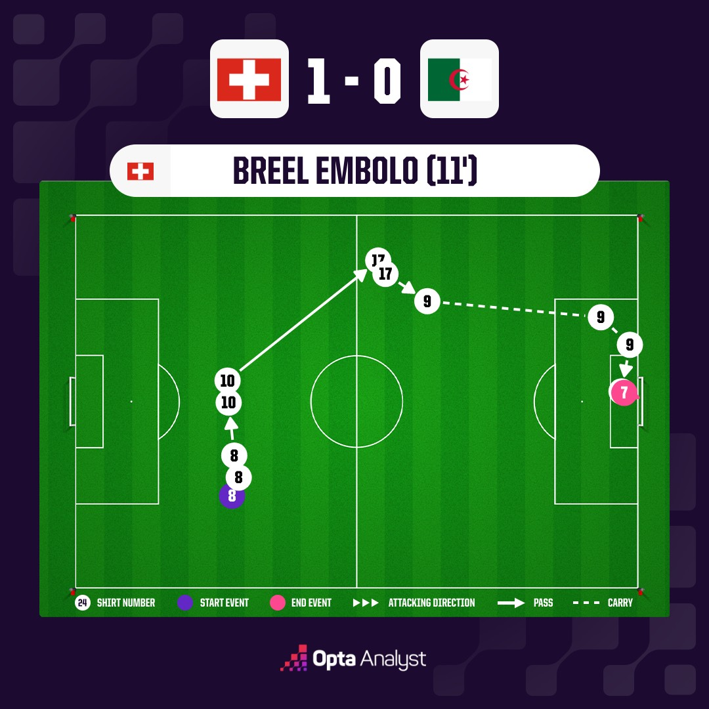
10'
Johan Manzambi has assisted his second goal in the 2026 FIFA World Cup.
10'
Switzerland have avoided defeat in their last 12 matches when scoring first in the FIFA World Cup, since a 1-2 loss to Spain on 15th July 1966.
10'
Breel Embolo has scored his second goal in the 2026 FIFA World Cup, netting for the first time since 13th June 2026 against Qatar.
10'
GOAL! A great start for Switzerland as they strike first and move into a 1-0 lead. Breel Embolo beats the goalkeeper from inside the penalty area – it looks like we are in for an exciting contest at BC Place Vancouver!
7'
Confident start by Algeria, knocking it around with purpose and keeping control in the opening phase.
6'
MISS! How has that not gone in? A complete lack of composure shown from Houssem Aouar, who squanders a golden chance for Algeria, whose coach looks on frustrated from the touchline. A real let off for Switzerland!
1'
Up and running! Algeria have kicked off and this FIFA World Cup match is now under way at BC Place Vancouver. Let’s hope for an intriguing battle on the pitch.
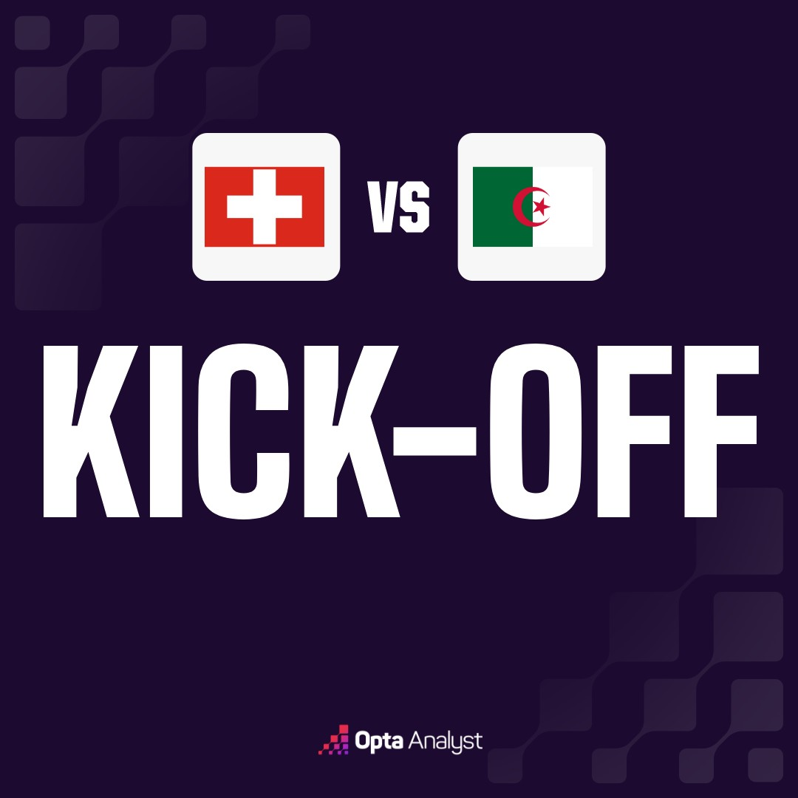
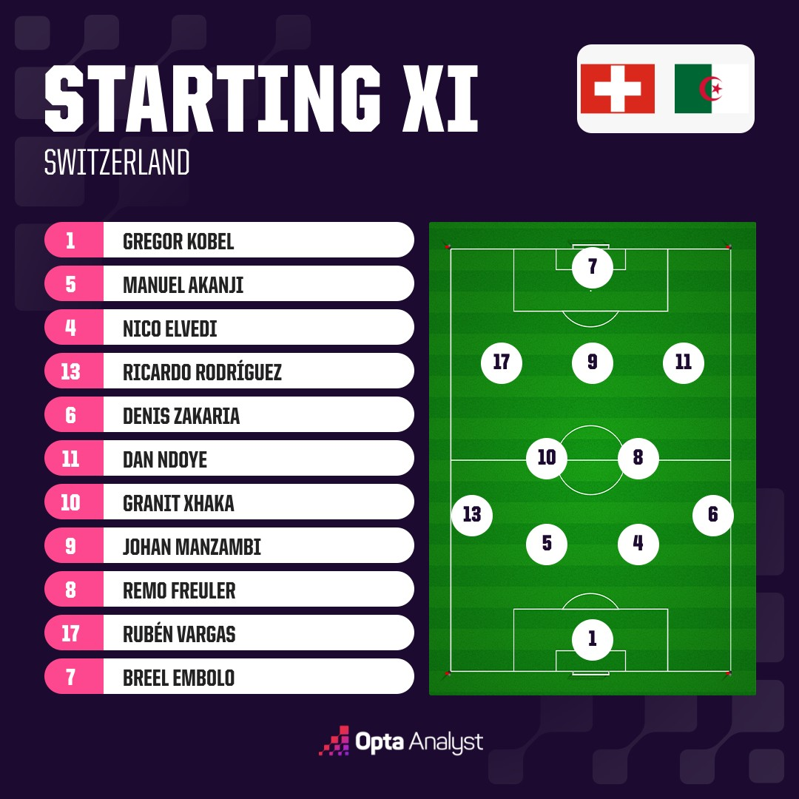
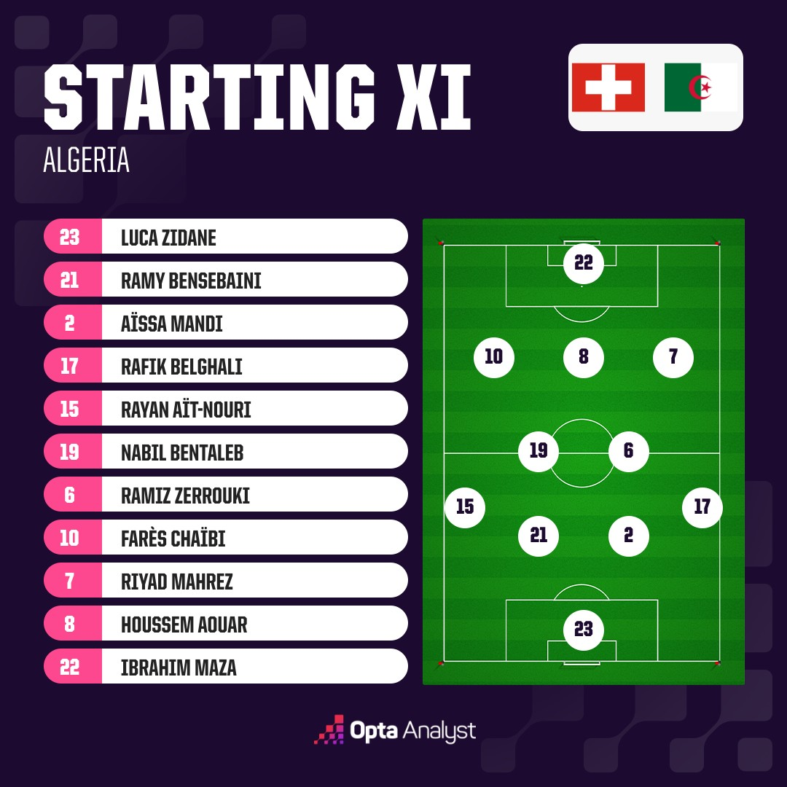
Ricardo Rodríguez is making his 16th appearance in the FIFA World Cup.
Granit Xhaka is making his 16th appearance in the FIFA World Cup.
J. Manzambi has scored in the last 2 games for Switzerland
There have been 3 or more goals scored in total in each of Algeria's last 5 away games
There have been 3 or more goals scored in total in each of Switzerland's last 5 home games
Switzerland play Algeria on Thursday for a FIFA World Cup Round of 32 clash at BC Place Vancouver.
Switzerland's last group stage match saw them triumph 2-1 over Canada on June 24. Rubén Vargas and Johan Manzambi scored in the win. They are undefeated in their last six games in all competitions. In seven games this year, they have three wins, three draws, and one loss.
Algeria played out a 3-3 draw against Austria in their last game, a June 27 group stage clash at Kansas City Stadium. Riyad Mahrez caught the eye with a brace. In 2026, they have won five, drawn two, and lost two.
Switzerland finished first in their group on seven points, while Algeria's four points placed them third.
Manzambi has caught the eye for Switzerland in World Cup play. He is the team's top scorer with three goals, one of those having been the crucial first of the match. Algeria have been a threat in the final third courtesy of Mahrez, who has scored twice in this season's World Cup.
Switzerland have scored in each of their three World Cup contests this season.
In their last six matches in all competitions, Switzerland have won three and drawn three. The Swiss side scored 12 and conceded five in that stretch, scoring first in five of the six contests. They had five first-half goals, while their opponents failed to find the net in the first 45 minutes. The Algerian side have won three, drawn two and lost one in their last six. The Algerian side scored 10 and conceded seven in that period, netting first in two of the six. They had two goals in the first half, while their opponents netted three times before the break.
-
General
Possession 44.5% 44.5255.4855.5% Possession lost in defensive half 38 383737 Possession lost in middle third 61 615252 Duels 117 117115115 Duels success rate 51.3% 51.28246.08746.1% Aerial duels 26 262626 Aerial duels won 57.7% 57.69242.30842.3% Successful dribbles 13 131111 Fouls won 12 121010 Offsides 0 022 Corner awarded 4 422 -
Distribution
Passes 438 438563563 Long passes 52 526363 Long passes proportion (%) 11.9% 11.87211.1911.2% Passing accuracy 81.1% 81.0584.90284.9% Passes in opponents' half 206 206299299 Passing accuracy in opponents' half (%) 68.9% 68.93276.92376.9% Total passes in the final third 85 85136136 Passing accuracy in final third (%) 64.7% 64.70666.91266.9% Forward passes 263 263350350 Forward passes (%) 60.0% 60.04662.16762.2% Through balls 2 244 Final third entries 38 387171 Penalty area entries 15 152121 Total open play crosses 9 944 Crosses 14 1466 Crossing accuracy 28.6% 28.57116.66716.7% -
Attack
Goals 2 200 Shots 11 1188 Shots on target 5 522 Blocked shots 2 233 Headed shots 2 200 Shots outside the box 2 233 Shots inside the box 9 955 Shots accuracy excluding blocked shots 55.6% 55.5564040.0% Shooting accuracy 45.5% 45.4552525.0% Key Passes 8 888 -
Defence
Tackles 20 202121 Tackles success rate 70.0% 7042.85742.9% Clearances 23 231414 Interceptions 17 171010 Recoveries 50 505555 Attacking third recovery 2 244 Defensive third recovery 30 302828 Midfield third recovery 18 182323 Recoveries in attacking half (%) 4.0% 47.2737.3% -
Discipline
Fouls conceded 10 101212 Yellow cards 0 022 Red cards 0 000